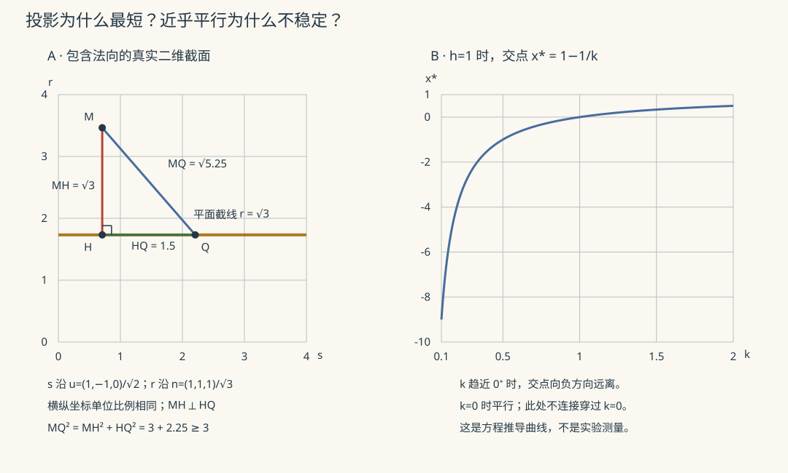

本页目录
解几 I · 向量代数与平面直线
解析几何是"用代数算几何"的第一门课，实用核心两块：三种向量乘积（每种对应一类几何量）与平面/直线的方程与位置关系。它同时是高代的几何素材库与多元微积分的舞台布景——复习定位是把"公式—几何含义"的对照表擦亮。
学习层：点、自由向量与位置关系要分层判断
1. 一个具体的直线—平面实例
令
以及
这里 \(\mathbf q\) 是一个点的位置，\(\mathbf d\) 是可以平移到任意起点的自由方向向量；它们不是同一种对象。当 \(k\ne0\) 时直线穿过平面，参数为 \(\tau=-h/k\)；当 \(k=0,h\ne0\) 时平行而不相交；当 \(k=0,h=0\) 时整条直线落在平面内。
2. 先预测：法向、方向、平行与退化
打开实验台前，先写下三个预测：
- 把点 \(\mathbf q\) 换成 \(\mathbf q+\mathbf d\) 会改变自由向量 \(\mathbf d\) 吗？点与向量能否直接相加后仍叫同一个几何对象？
- 若 \(\mathbf n\cdot\mathbf d=0\)，直线是否必然在平面内？还需要检查哪一个点条件？
- 两个平面法向量平行时，它们一定相交吗；什么额外条件会让它们重合？零法向量或零方向向量又表示什么？
提交后，实验台会揭示点法式、参数式、点积证书、交点参数或重合/平行判定，并用 SVG 显示当前几何截面。结果表在预测完成前保持隐藏。
3. 正式桥：两个标量决定直线—平面关系
把直线代入平面方程：
若 \(\mathbf n\cdot\mathbf d\ne0\)，有唯一交点；若 \(\mathbf n\cdot\mathbf d=0\)，则还必须看 \(\mathbf n\cdot(\mathbf q-\mathbf p)\)：为零表示直线包含于平面，否则表示平行不相交。
两个平面 \(P_i:\mathbf n_i\cdot\mathbf x=c_i\) 则先看 \(\mathbf n_1\times\mathbf n_2\)：非零给出相交直线方向；平行时写成 \(\mathbf n_2=\lambda\mathbf n_1\)，再检查 \(c_2=\lambda c_1\)；相容为重合，不相容为平行，负的比例也必须保留。所有这些结论都默认法向量和方向向量是非零的。
JavaScript 失效时的静态 fallback：固定 \(P:z=0\)，取 \(L:\mathbf x=(1,1,h)+\tau(1,0,k)\)。
| \(h\) | \(k\) | \(\mathbf n\cdot\mathbf d\) | \(\mathbf n\cdot(\mathbf q-\mathbf p)\) | 结论 |
|---|---|---|---|---|
| \(1\) | \(1\) | \(1\) | \(1\) | 相交，\(\tau=-1\)，交点 \((0,1,0)\) |
| \(1\) | \(0\) | \(0\) | \(1\) | 平行且不相交 |
| \(0\) | \(0\) | \(0\) | \(0\) | 直线包含于平面 |
| 任意 | \(0\)，且 \(\mathbf n=\mathbf0\) | \(0\) | 不可判 | 退化：不是一个合法平面 |
若改做两个平面，平行法向量加上相同比例的常数才是重合；仅凭法向量平行不能跳过常数项检查。
4. 定理级结论与失败边界
- 定理级：非零法向量定义一个平面，非零方向向量定义一条直线；代入后一次方程的系数与常数同时决定相交、平行、重合或包含。
- 对象边界：点是位置，向量是位移/方向；法向量垂直于平面，直线方向向量沿直线。选定原点后可以把点对应到位置向量，但需说明每一步得到的是点还是位移，不能混用。
- 退化边界：零法向量使 \(0=0\) 或 \(0=c\) 失去唯一平面；零方向向量不定义一条有方向的直线。数学上的零与测量容差要分开；本实验对实际输入精确判零，近乎平行另作敏感性提示。
- 位置关系边界：点积为零只给出平行/垂直的一部分信息；平行法向量不自动推出重合，必须继续核对常数项和点是否满足方程。
1. 点、位移和坐标：相同的三元数组可以有不同身份
一个点 \(P\) 表示位置，两个点的差 \(Q-P=\overrightarrow{PQ}\) 是位移；一个点加位移得到另一个点。自由向量可以平移到任意起点，不随放置位置改变。选定原点 \(O\) 后，点 \(P\) 才对应位置向量 \(\overrightarrow{OP}\)；改变原点会改变位置向量，却不会改变 \(Q-P\)。
因此不是“点的坐标绝对不能作向量运算”，而是要先说明原点、坐标系和运算结果的身份。仿射组合 \(\lambda P+(1-\lambda)Q\) 与原点选择无关；未说明原点的 \(P+Q\) 通常没有这样的内在意义。下面使用右手定向的正交单位坐标系，距离单位一致。
2. 三种乘积：投影、面积与体积如何接起来？
内积 \(a\cdot b=\sum_i a_ib_i=\|a\|\|b\|\cos\theta\) 把沿另一个方向的分量提取出来。对 \(b\ne0\)，令
直接计算 \(a_\perp\cdot b=0\)，再用勾股定理得 \(\|a\|^2=\|a_\parallel\|^2+\|a_\perp\|^2\)。零向量与所有向量内积为零，但没有唯一的方向或夹角；不能把非零向量的角度解释机械搬给零向量。
在定向三维欧氏空间中，外积按坐标定义为
展开可验证它与 \(a,b\) 都正交，且满足 Gram 恒等式
右边也等于 \(\|b\|^2\|a_\perp\|^2\)，所以外积的模是平行四边形的“底乘高”，方向由右手定向给出。非零向量外积为零等价于平行；更一般地，它等价于这两个向量线性相关。外积换序变号，且不满足结合律；可从分量验证
混合积 \((a\times b)\cdot c=\det[a\ b\ c]\) 再把第三条边投影到前两条边的法向，因而给出带定向体积；绝对值才是通常体积。混合积为零等价于三向量线性相关，允许本来就有零向量或平行边的退化情形。这里的“共面”指自由向量的张成空间至多二维，不是在任意位置画三条线就断言共面。
3. 平面和直线：方程中的非零条件不能省略
给定点 \(p\) 和非零法向量 \(n\)，平面是
整体乘以非零数不改变点集：\(n\cdot x=c\) 与 \((\lambda n)\cdot x=\lambda c\) 是同一个平面。若 \(n=0\)，\(c=0\) 给出整个空间，\(c\ne0\) 给出空集，两者都不是二维平面。三点 \(A,B,C\) 定平面要求它们不共线，此时可用 \((B-A)\times(C-A)\) 作法向量。
给定点 \(q\) 与非零方向 \(d\)，直线是 \(L=\{q+td:t\in\mathbb R\}\)。参数式允许方向分量为零；只有相应分量非零时才能写 \((x_i-q_i)/d_i=t\)。例如 \(d=(1,0,0)\) 应写 \(x=q_1+t,y=q_2,z=q_3\)，不能除以零。若 \(d=0\)，参数像只是单个点。
平面也可写 \(p+su+tv\)，其中 \(u,v\) 线性无关且都垂直于 \(n\)；两条独立切向量张成法向的二维正交补。这把隐式约束与参数化连在了一起。
直线与平面：一个一次方程的三种结果
把 \(x=q+td\) 代入平面，记 \(a=n\cdot d\)、\(b=n\cdot(q-p)\)，得到 \(at=-b\)。若 \(a\ne0\)，唯一交点为 \(q-(b/a)d\)；若 \(a=0,b\ne0\)，平行不相交；若 \(a=b=0\)，整条直线包含于平面。三个分支都先要求对象合法。
两个平面：交线不仅有方向，还要有位置
若 \(n_1\times n_2=w\ne0\)，两个独立线性约束在三维留下一个自由度，交集是一条直线，方向为 \(w\)。一个具体的交线点可以取
用混合积或双重外积验证 \(n_1\cdot x_0=c_1\)、\(n_2\cdot x_0=c_2\)，并且 \(x_0\cdot w=0\)，所以它还是交线上距原点最近的点。若法向量平行，设 \(n_2=\lambda n_1\)；还需 \(c_2=\lambda c_1\) 才重合，否则平行不相交。若改用单位法向比较常数，必须同时处理法向的正负方向。
4. 所有距离公式都在寻找最短的垂直分量
点到平面：证明垂足是全局最短点
平面 \(n\cdot x=c\)，点 \(M\) 的垂足为
代入即得 \(n\cdot H=c\)，且 \(M-H\) 平行于法向。对平面上任意 \(Q\)，\(H-Q\) 与 \(M-H\) 正交，故
因此垂足给出唯一最短距离 \(d(M,P)=|n\cdot M-c|/\|n\|\)。分子会随方程缩放，分母也按同样倍率缩放，距离保持不变。
点到直线：把差向量分成平行与垂直部分
直线 \(q+td\)，点 \(M\)，令 \(v=M-q\)。平方距离 \(\|v-td\|^2\) 对 \(t\) 是严格凸二次式，令导数为零得 \(t_*=(v\cdot d)/\|d\|^2\)。于是垂足为 \(q+t_*d\)，距离为
第二个等号用 Gram 恒等式，展示“面积除以底”与“减去平行投影”其实是同一个计算。
两条直线：先分类，再选距离公式
令 \(L_1=p+sd_1,L_2=q+td_2\)，\(v=q-p\)。
- 若 \(d_1\times d_2=0\)，再看 \(v\times d_1\)：为零则重合，否则平行。距离为 \(\|v\times d_1\|/\|d_1\|\)。
- 若 \(w=d_1\times d_2\ne0\)，\(v\cdot w=0\) 当且仅当两线相交，否则异面。理由是 \(v\) 位于 \(\operatorname{span}(d_1,d_2)\) 当且仅当它垂直于 \(w\)，这恰好决定能否解出 \(p+sd_1=q+td_2\)。
在第二种情形，移动两条线上的点只能改变连接向量在 \(\operatorname{span}(d_1,d_2)\) 中的分量，垂直分量不变。因此最短距离为
它也覆盖相交时距离为零的情况；平行时分母为零，必须换回上一个分支。需要具体最近点时，令连接向量与两个方向都正交，解
该矩阵的行列式为 \(\|d_1\times d_2\|^2>0\)，所以非平行情形有唯一最近点对。这也是一个小型最小二乘问题。相关几何构造可参照 OpenStax 的空间直线与平面。
5. 夹角与近乎平行：分类正确不等于交点稳定
不定向直线之间的锐角或直角 \(\alpha\in[0,\pi/2]\) 满足 \(\cos\alpha=|d_1\cdot d_2|/(\|d_1\|\|d_2\|)\)；两平面的夹角用其法向量代入同式。直线与平面的夹角 \(\beta\) 则满足
因为线面角与方向—法向夹角互余。单凭二维投影上的角度一般不能读出三维夹角。
实验固定 \(P:z=0\)、\(q=(1,1,h)\)、\(d=(1,0,k)\)，故 \(t=-h/k\)，交点横坐标 \(x_*=1-h/k\)。当 \(h\ne0\)、\(k\) 接近零但不等于零时，交点可能非常远：\(\partial x_*/\partial k=h/k^2\)。改动很小的倾斜就可能造成很大的位置变化；等到 \(k=0\)，位置关系才变成平行。

左：固定另一个切向坐标后的真实二维截面，垂直线段比任意斜线段短。右：曲线来自交点公式，未把视窗外交点截成边界点；横轴只画正的 \(k\ge0.1\)，\(k=0\) 不在公式定义域。
不能用固定绝对阈值把所有小法向量当成零。例如 \(z=0\) 与 \(10^{-12}z=0\) 都是合法平面。实验对实际输入所表示的二进制数精确判定相关点积/叉积是否为零，再给出近似坐标；界面中的小量不会被当成数学上的零。若输入来自测量，则应另给长度、角度或噪声模型下的容差，精确算术不能消除测量不确定性。关于舍入误差如何改变几何分支，可阅读 鲁棒几何判定介绍。
6. 三个例子与三道迁移题
过 \(A(1,0,0),B(0,2,0),C(0,0,3)\) 的平面，法向为 \((B-A)\times(C-A)=(6,3,2)\)，得到 \(6x+3y+2z=6\)；三个点逐一代入可验证。
直线 \(L_1=(t,0,0)\) 与 \(L_2=(0,1,s)\) 的公垂方向为 \((0,-1,0)\)，距离为1，最近点为 \((0,0,0)\) 和 \((0,1,0)\)。它们方向正交却不相交，说明“方向正交”不能代替相交判断。
点 \(M=(2,1,3)\) 到平面 \(x+y+z=3\)，由垂足公式得 \(H=(1,0,2)\)、距离 \(\sqrt3\)。图中的投影截面正来自这个例子。
题1： \(P_1:x+y+z=1\)、\(P_2:2x+2y+2z=3\) 是否重合？距离多少？若把第二式右端改成2呢？
展开推导
法向量之比为2，但常数之比为3，所以两平面平行不重合。把第二式除以2变成 \(x+y+z=1.5\)，距离为 \(|1.5-1|/\sqrt3=1/(2\sqrt3)\)。右端改为2后，两个方程整体比例一致，故重合。只比较单位法向而不同时比较有符号常数会漏掉这个区别。
题2： \(L_1=(s,0,0)\)、\(L_2=(0,1,0)+t(1,0,\varepsilon)\)，求 \(\varepsilon\ne0\) 时最近点对与距离；\(\varepsilon=0\) 呢？
展开推导
连接向量为 \((t-s,1,\varepsilon t)\)，平方长度为 \((t-s)^2+1+\varepsilon^2t^2\)。\(\varepsilon\ne0\) 时唯一最小点是 \(s=t=0\)，距离1；\(\varepsilon=0\) 时任意 \(s=t\) 都取到距离1，最近点对不再唯一。两种情况的距离连续，但决定最近参数的矩阵在平行极限失去可逆性；小分母不等于距离一定发散。
题3： \(P:z=0\)，\(L=(1,1,1)+t(1,0,k)\)。比较 \(k=0\)、\(10^{-12}\)、\(-10^{-12}\)，并说明把平面法向乘以 \(2^{-100}\) 后应发生什么。
展开推导
\(k=0\) 时平行不相交；\(k=10^{-12}\) 时 \(t=-10^{12}\)、交点 \((1-10^{12},1,0)\)；\(k=-10^{-12}\) 时 \(t=10^{12}\)、交点 \((1+10^{12},1,0)\)。很小的倾斜符号变化把交点移到很远的另一侧。将法向乘以非零的 \(2^{-100}\) 不改变任何位置关系，代入方程的系数和常数同倍率变化，参数比值保持不变。数值读取的十进制小数一般只近似表示，这与理论精确小数应分开；实验的精确判定针对已表示的数。
下一页：二次曲面，把线性约束扩展为二次方程，同时继续检查退化与坐标变换。